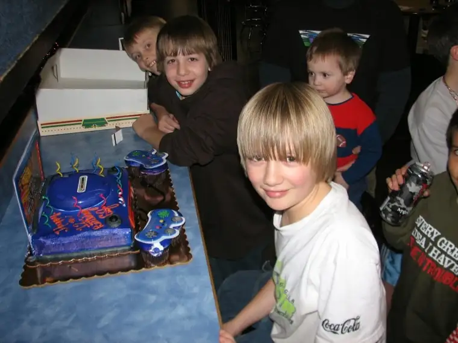
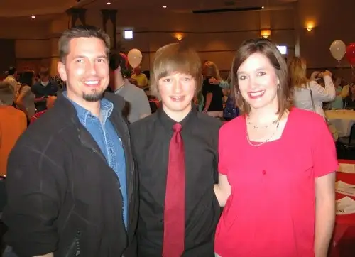

For much of the month of May and beyond, our world has been and will be filled with graduation parties — of our oldest son’s longtime classmates, of a niece, and of two of our middles, who are graduating from fifth and eighth grades.
The expectation was that our oldest son, like all other seniors we know, would be honored guest at his own graduation party this month. But several months back, that plan changed.
For those who remember him long ago, there he is.
{kind=link}
Yep. That little guy who had so much to say, and said it so clearly and so early, but not usually when in the midst of strangers.
Our oldest introvert has always been adamant about doing things his own way, and, if preferred, with a small circle of friends. Not too much hype.
 |
| Birthday boy becomes a teenager |
{kind=link}
And no pictures please, unless there’s some kind of reward waiting, because that’s painful stuff for one who likes to blend into the background.
{kind=link}
When we added it all up, it didn’t make sense to have a typical graduation party for our boy. Planning it would have made us miserable, and hosting it would have made him miserable. There were also a lot of unknowns surrounding this year. So in the end, we let go and let it be.
We’ll have a party, but in a style that is typical to him, it will be quiet, not a lot of fanfare, and it will be a little out of season from the usual string of grad parties. We don’t even have a date settled yet, or any details, really. I just know that at some point we’ll do a little something to honor all those years he kept at it despite not being the type to hunker down and settle in scholar-style.
In assessing how we’d approach this school-year’s end, I definitely took into consideration the fact that our son is a pretty high-end introvert.
{kind=link}
So instead of that big garage party, he’s looking forward to a trip out West with one of his good friends and said friend’s father.
At this point, I’m very okay with the Plan B. But it has denied me a chance to really celebrate his life while the wave is high. So, today, I’m going to honor him here, since there won’t be any house party with a rolling slideshow of his life.
 |
| 8th grade graduation |
{kind=link}
And yet…his life is worthy of celebration. He hasn’t been what I would call an easy child. Complex, mysterious, unconventional, and a bit on the brooding side. Yep, he’s a brooder…like his mother.
{kind=link}
{kind=link}
{kind=link}
{kind=link}
But he can be funny, too. Very funny.
{kind=link}
{kind=link}
Pretty sweet too, especially when it’s someone else’s little brother.
{kind=link}
And sharp. Quick to figure things out. And motivated when he wants to be, in his time and in his way.
{kind=link}
Despite his uncommon ways of going about things, he is every bit a gift of God — someone who has given our lives a whole new and beautiful dimension.
{kind=link}
{kind=link}
{kind=link}
It’s good for me to look back, to remember, to celebrate. Our introvert won’t have an extrovert party and there will be no big surprises.
The last time we had a surprise birthday event, it was at at his band concert at age 13.
| Birthday boy, age 13, band concert |
{kind=link}
This is what introverts do when they’re surprised (duck).
But we will find a way to celebrate his life introversion style. It won’t be typical, but it will be fitting for his story and who he is, and exactly what it was meant to be all along.
{kind=link}
We cannot be someone we are not, only who we are. And that is enough.
Q4U: What Plan B have you employed lately? Did it turn out better or worse than you imagined?